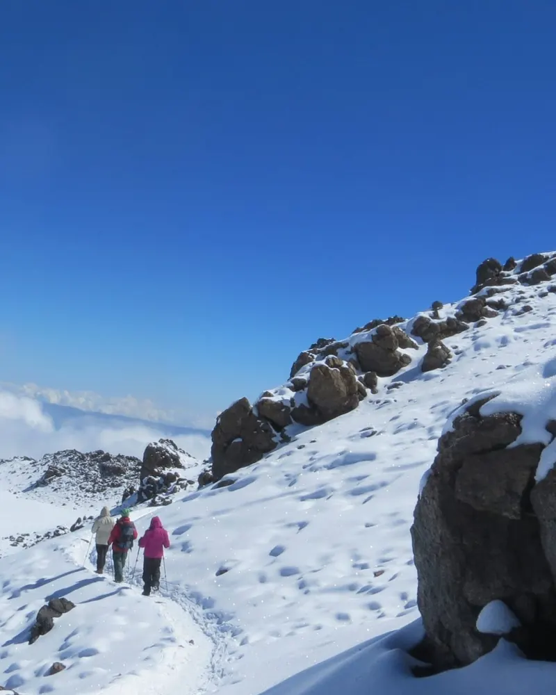
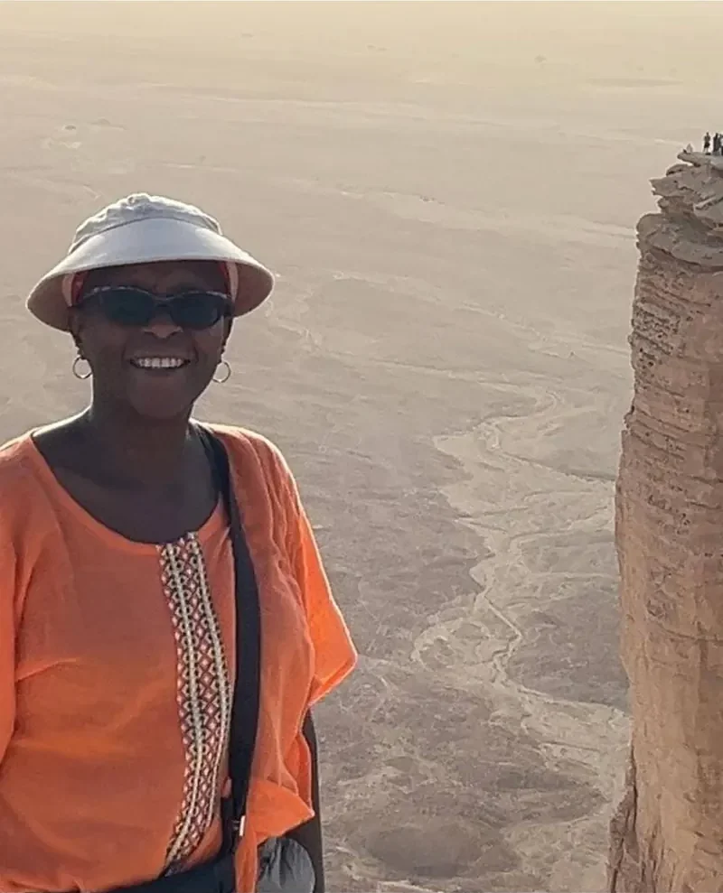
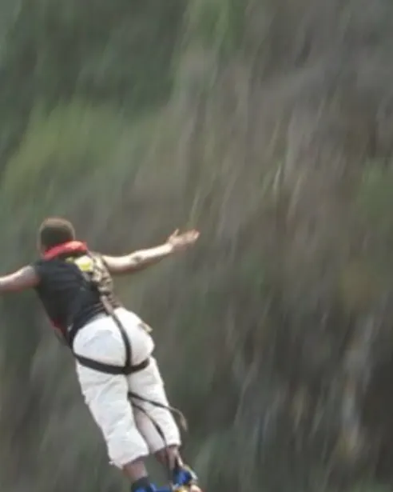
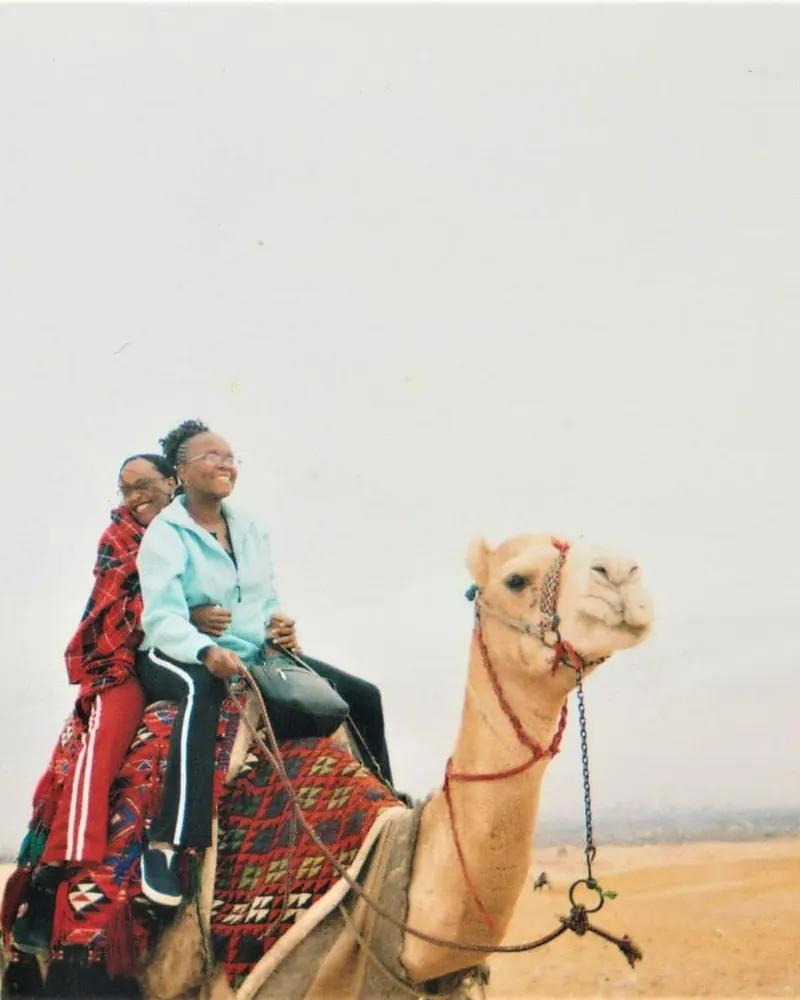
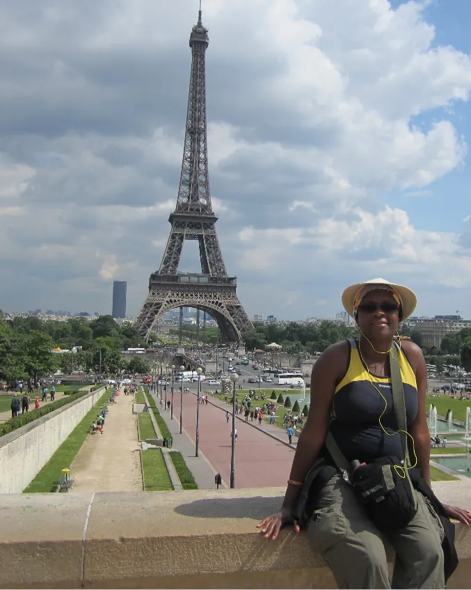
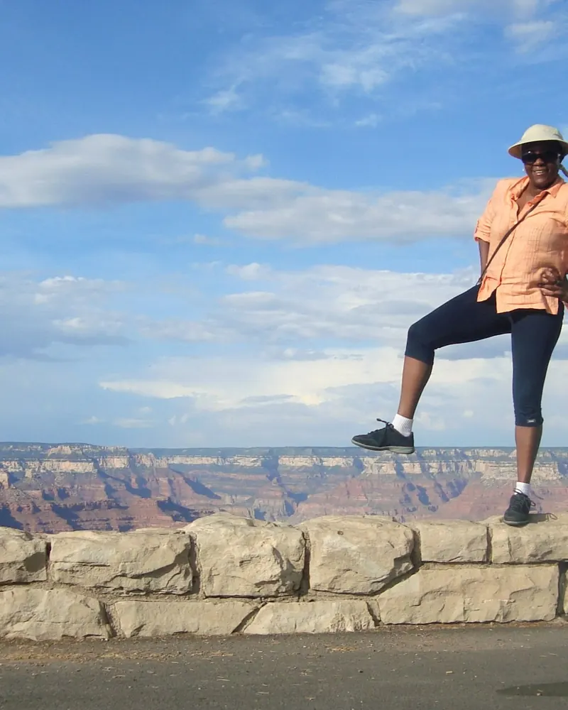
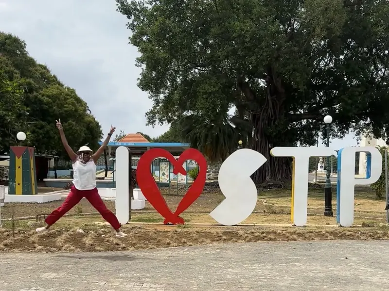
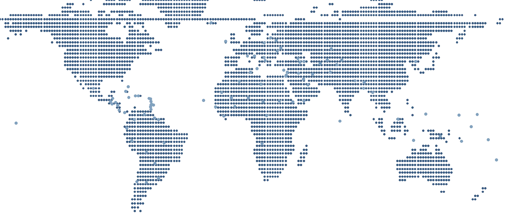

Tanzania · Summit
Summiting Kilimanjaro
The climb where my courage felt quiet and steady: one slow breath, one careful step, and a summit I still carry in my bones.
Africa's most trusted travel coach
Travel is a desire for many. It was mine too. I was born and raised in Kenya, a place the world dreams about, and I was exposed to travel early: coastal buses, overnight trains, and road trips that turned horizons into classrooms.
My first time abroad came through a school trip to Germany in 1989. That one trip widened the map for the rest of my life. Since then I've visited 100 countries across 5 continents and explored all 47 counties of Kenya. Some journeys were solo, many were shared. Each one taught me something about courage, curiosity, and the quiet joy of being on my own timeline.

A path of scenes that shaped how I travel

The climb where my courage felt quiet and steady: one slow breath, one careful step, and a summit I still carry in my bones.

For a few seconds, I was just a body in the air, heart racing louder than the roar of the falls, landing with a new kind of bravery.

Golden light, ancient stone, and the strange feeling that my little story was walking beside thousands of years of history.

Side streets, tiny cafés, and long walks by the river: a reminder that I'm allowed to take up space, gently and fully.

Standing on the rim, feeling tiny in the best way, and realizing just how much life is still left to explore.

Thirty-seven years after a school trip to Germany, the hundredth stamp. No lottery win, no sponsor. Just planning, done over and over.
Numbered in the order I reached them. Hover over a number, or tap a dot on your phone, for a sneak peek.

Why I coach
I'm a woman who has wandered across 100 countries. If I knew years ago what I know now, I would have saved hundreds, sometimes thousands, of dollars, traveled more days for the same money, and done it with far less stress. That hindsight is why I document what I've learned and why I created TravelwithMkay.
Friends still ask, “Mkay, where are you going next?” My answer is almost always different, and it almost always starts with, “I'm going to…”
Now it's your turn. Where are you going next?
Plan it with me over a short callMagazines and podcasts that have shared Maria's story
Not ready for a call? Get the free Pre-Trip Confidence Checklist.